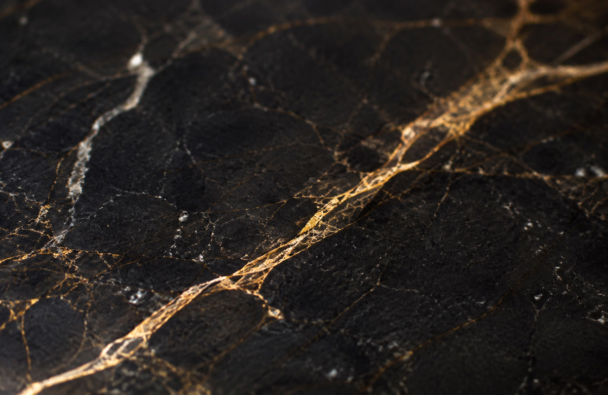
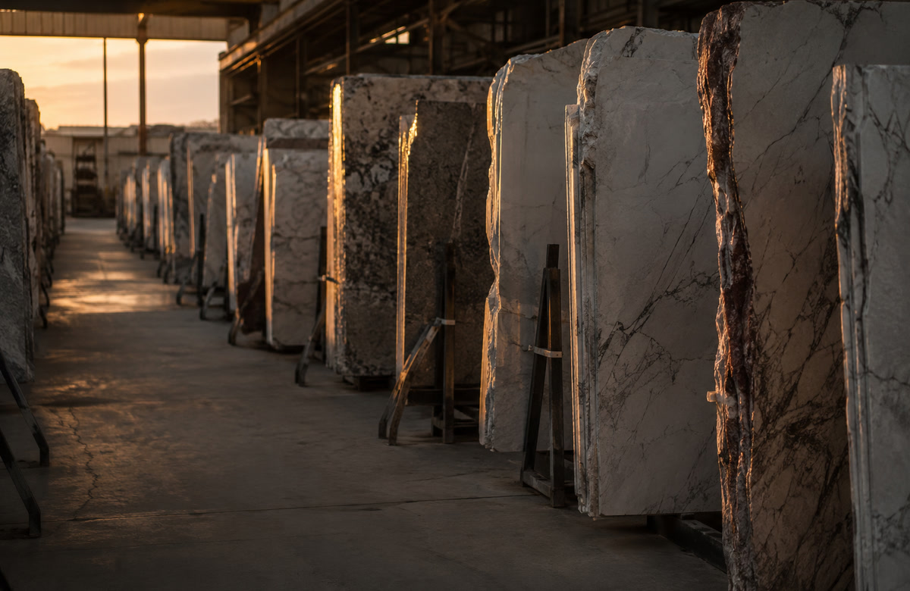

Marble starts as limestone — the compressed remains of ancient shells and coral — until heat and pressure deep in the earth's crust recrystallise it into something else entirely.
Marble begins as limestone, built almost entirely from calcium carbonate — the compacted remains of marine organisms laid down over millions of years on an ancient seabed. Left alone, it stays limestone. But where that rock gets caught at the edge of a shifting continental plate, or sits near a body of rising magma, heat and pressure recrystallise its calcite into larger, interlocking crystals.
That process is called metamorphism, and it erases the original fossils and bedding lines of the limestone, leaving a rock with a genuinely different structure and character: marble.
Pure limestone recrystallises into white marble. Almost everything else about a slab's colour and veining comes down to whatever else was trapped in the rock when it formed — clay, iron oxide, mica, graphite. Those impurities are what streak a slab grey, gold, pink, or black, in a pattern that never repeats the same way twice. No two slabs, and no two kitchens, end up with quite the same stone.


Carrara, in Italy, has been quarried for nearly two thousand years, using methods that stayed largely unchanged from Michelangelo's time until the late nineteenth century. Michelangelo himself was famously hands-on about it — he spent long stretches on-site at the quarries, selected blocks personally, gave precise orders on the sizes being cut, and even concerned himself with the roads built to move the stone off the mountain.
That's the thing about marble that's easy to forget once it's polished and sitting under a coffee cup: someone had to find it, cut it, and move it, often at real difficulty and expense, because nothing else looked or felt quite like it.
Today, the marble reaching a Garden Route home has usually travelled a long way before it gets here — sourced through South African stone suppliers who import from the same historic quarrying regions that have supplied builders and sculptors for centuries.
It's cool to the touch, even on a warm day — dense enough that it doesn't hold heat the way a countertop laminate does. It marks a little over the years, and that's not really a flaw; a honed marble step or a well-used kitchen island develops a soft, lived-in patina that a manufactured surface can't fake, because a manufactured surface isn't actually wearing — it's just getting dirty. Marble is quietly recording use.
It's also, historically, not a humble material. It's what temples, palaces, and sculpture were made from when the people building them wanted the result to outlast them. Putting a piece of it under your hands every morning on a kitchen counter is a smaller, quieter version of the same idea.
Marble is a genuinely durable stone — it has outlasted the buildings it was first quarried for — but it's also softer and more reactive than granite or engineered stone. Almost everything that goes wrong with a marble surface fits into one of two categories.
Something acidic — lemon, wine, vinegar, most kitchen sprays — reacts with the calcite in the stone and dulls the surface where it sat. It's a mark on the finish itself, not something sitting on top of it, and no amount of cleaning lifts it back out.
Oil or pigment soaks into the stone's natural pores and discolours it from within. It looks different to an etch — darker rather than dull — and, unlike etching, it can often be lifted with the right approach.
Especially wine, citrus, oil, and tomato. The longer any of it sits, the more chance it has to etch or stain.
Anything acidic or ammonia-based will etch the surface on contact. A pH-neutral stone cleaner, or warm water and mild soap, is all it needs.
Coasters under glasses, a trivet under hot pans, a board under the knife. Marble is soft enough to scratch and heat-sensitive enough to shock.
A sealed surface beads water instead of soaking it in. Most residential kitchens hold a seal for 12–24 months; a shower or other wet area is worth checking annually.
A dull, cloudy patch where something acidic sat. It isn't dirt, so cleaning won't lift it. Light etching often buffs out with a fine marble polishing powder; deeper etching needs honing back to an even finish.
A patch that's darker than the surrounding stone, not dull. A baking-soda-and-water poultice pulls light stains; oil-based stains sometimes need a solvent poultice, held under plastic wrap for a day or two.
Common on an exposed edge or corner. It's repairable — the chip gets filled and colour-matched, not just patched over and left obvious.
Telling wear from damage from something that's actually fine isn't always obvious standing over it in a bathroom mirror. It usually is in a photo.
If you'd rather have someone look at it than guess — send us a photo and we'll tell you straight what it needs.